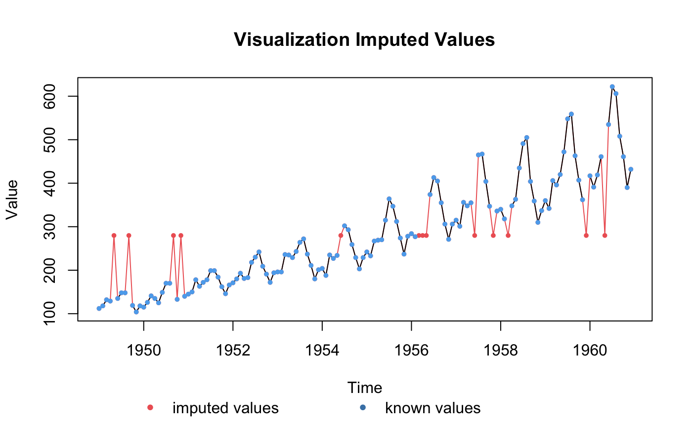
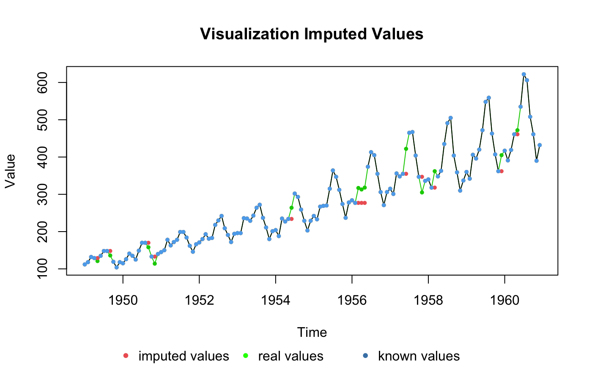
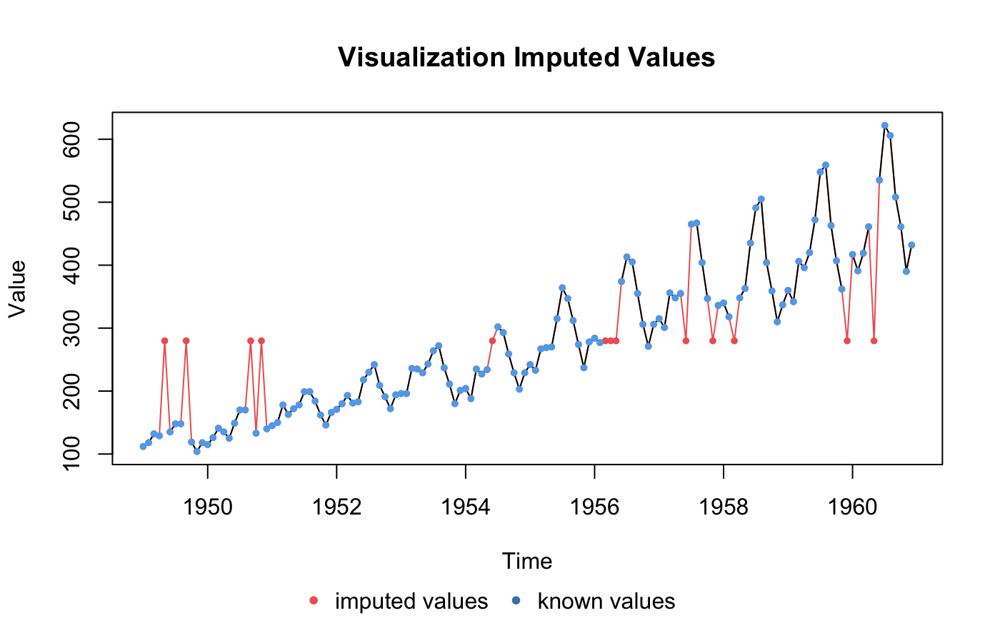

Visualize the imputed values in a time series.
plotNA.imputations(x.withNA, x.withImputations, x.withTruth = NULL, legend = TRUE, main = "Visualization Imputed Values", xlab = "Time", ylab = "Value", colWithTruth = "green3", colLines = "black", colWithImputations = "indianred2", colWithNA = "steelblue2", ylim = c(min(c(x.withImputations, x.withTruth), na.rm = TRUE), max(c(x.withImputations, x.withTruth), na.rm = TRUE)), pch = 20, cex = 0.8, ...)
| x.withNA | Numeric Vector or Time Series ( |
|---|---|
| x.withImputations | Numeric Vector or Time Series ( |
| x.withTruth | Numeric Vector or Time Series ( |
| legend | If TRUE a legend is shown at the bottom of the plot. A custom legend can be obtained by
setting this parameter to FALSE and using |
| main | Main title for the plot |
| xlab | Label for x axis of the plot |
| ylab | Label for y axis of plot |
| colWithTruth | Defines the color of the real values (truth) for the NA values. |
| colLines | Defines the color of the lines connecting non-NA observations. |
| colWithImputations | Defines the color for the imputed values. |
| colWithNA | Defines the color of the non-NA observations. |
| ylim | the y limits of the plot |
| pch | Either an integer specifying a symbol or a single character to be used as the default in plotting points. |
| cex | A numerical value giving the amount by which plotting text and symbols should be magnified relative to the default. |
| ... | Additional graphical parameters that can be passed through to plot |
This plot can be used, to visualize the imputed values for a time series. Therefore, the imputed values (filled NA gaps) are shown in a different color than the other values. If the real values (truth) behind the NA gaps are known these are also added in a different color.
#Example 1: Visualize the values that were imputed by na.mean in the time series impMean.Airgap <- na.mean(tsAirgap)#> Warning: na.mean will replaced by na_mean. #> Functionality stays the same. #> The new function name better fits modern R code style guidelines. #> Please adjust your code accordingly.plotNA.imputations(tsAirgap, impMean.Airgap)#Example 2: Visualize the values that were imputed by na.locf and the true values in the time series impLOCF.Airgap <- na.locf(tsAirgap)#> Warning: na.locf will replaced by na_locf. #> Functionality stays the same. #> The new function name better fits modern R code style guidelines. #> Please adjust your code accordingly.plotNA.imputations(tsAirgap, impLOCF.Airgap, tsAirgapComplete)#Example 3: Same as example 1, just written with pipe operator tsAirgap %>% na.mean %>% plotNA.imputations(x.withNA = tsAirgap)#> Warning: na.mean will replaced by na_mean. #> Functionality stays the same. #> The new function name better fits modern R code style guidelines. #> Please adjust your code accordingly.